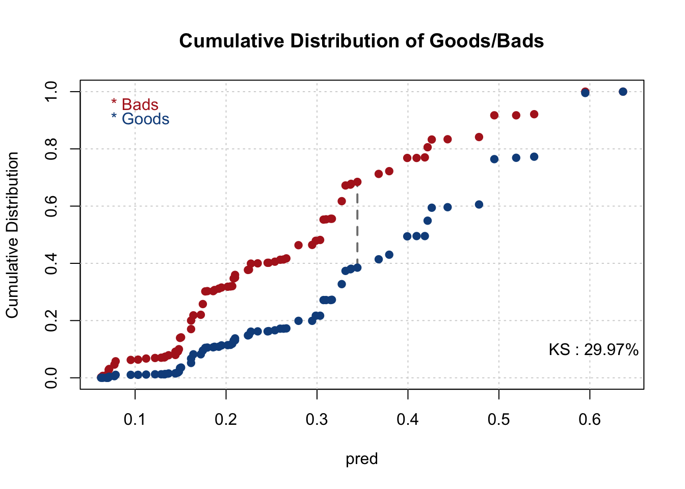
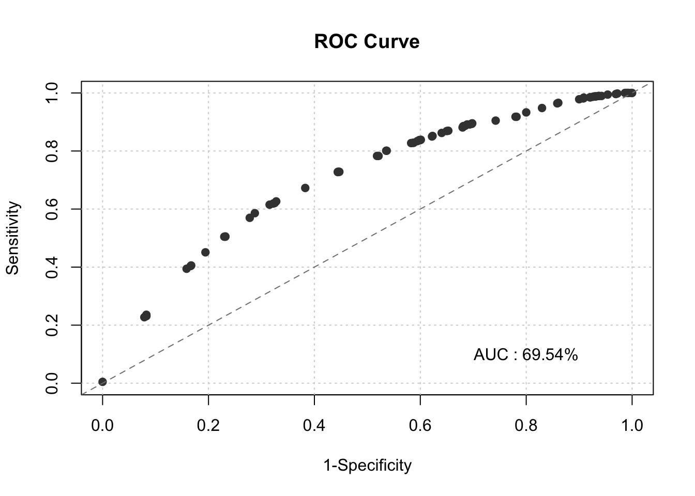
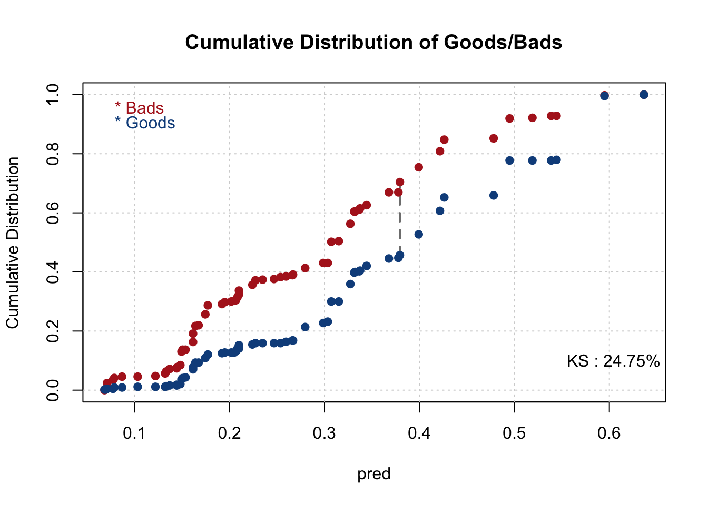
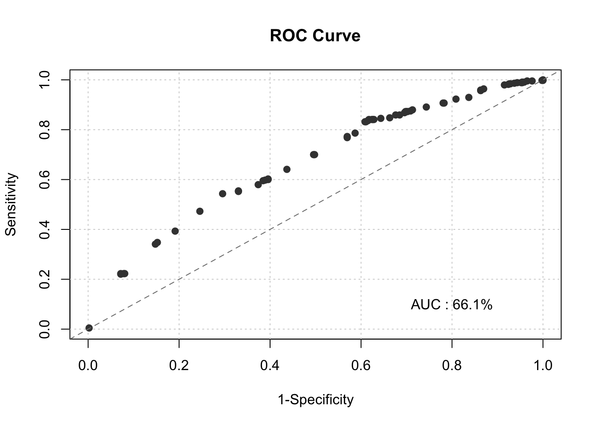

Chapter 3 Evaluate the Initial Model - Training Data
train$pred <- initial_score$fitted.values
smbinning.metrics(dataset = train, prediction = "pred", actualclass = "GB", report = 1)##
## Overall Performance Metrics
## --------------------------------------------------
## KS : 0.2997 (Unpredictive)
## AUC : 0.6954 (Poor)
##
## Classification Matrix
## --------------------------------------------------
## Cutoff (>=) : 0.3678 (Optimal)
## True Positives (TP) : 652
## False Positives (FP) : 328
## False Negatives (FN) : 408
## True Negatives (TN) : 712
## Total Positives (P) : 1060
## Total Negatives (N) : 1040
##
## Business/Performance Metrics
## --------------------------------------------------
## %Records>=Cutoff : 0.4667
## Good Rate : 0.6653 (Vs 0.5048 Overall)
## Bad Rate : 0.3347 (Vs 0.4952 Overall)
## Accuracy (ACC) : 0.6495
## Sensitivity (TPR) : 0.6151
## False Neg. Rate (FNR) : 0.3849
## False Pos. Rate (FPR) : 0.3154
## Specificity (TNR) : 0.6846
## Precision (PPV) : 0.6653
## False Discovery Rate : 0.3347
## False Omision Rate : 0.3643
## Inv. Precision (NPV) : 0.6357
##
## Note: 0 rows deleted due to missing data.smbinning.metrics(dataset = train, prediction = "pred", actualclass = "GB", report = 0, plot = "ks")
smbinning.metrics(dataset = train, prediction = "pred", actualclass = "GB", report = 0, plot = "auc")
Fixing PERS_H Var
#test PERS_H is missing an 8+ Category so we are gonna combine 7 and 8+
#test PERS_H is missing an 8+ Category
table(test$PERS_H)##
## 1 2 3 4 5 6 7+
## 316 203 179 138 48 13 3##
## 1 2 3 4 5 6 7+
## 800 441 392 343 85 25 14Check Model on the Testing Data
for(i in 1:length(results_all_sig_num)) {
test <- smbinning.gen(df = test, ivout = results_all_sig_num[[i]], chrname = paste(results_all_sig_num[[i]]$x, "_bin", sep = ""))
}
for(i in 1:length(results_all_sig_char)) {
test <- smbinning.factor.gen(df = test, ivout = results_all_sig_char[[i]], chrname = paste(results_all_sig_char[[i]]$x, "_bin", sep = ""))
}
for (j in 1:length(results_all_sig)) {
for (i in 1:nrow(test)) {
bin_name <- paste(results_all_sig[[j]]$x, "_bin", sep = "")
bin <- substr(test[[bin_name]][i], 2, 2)
woe_name <- paste(results_all_sig[[j]]$x, "_WOE", sep = "")
if(bin == 0) {
bin <- dim(results_all_sig[[j]]$ivtable)[1] - 1
test[[woe_name]][i] <- results_all_sig[[j]]$ivtable[bin, "WoE"]
} else {
test[[woe_name]][i] <- results_all_sig[[j]]$ivtable[bin, "WoE"]
}
}
}
test$pred <- predict(initial_score, newdata=test, type='response')
smbinning.metrics(dataset = test, prediction = "pred", actualclass = "GB", report = 1)##
## Overall Performance Metrics
## --------------------------------------------------
## KS : 0.2475 (Unpredictive)
## AUC : 0.6610 (Poor)
##
## Classification Matrix
## --------------------------------------------------
## Cutoff (>=) : 0.3992 (Optimal)
## True Positives (TP) : 239
## False Positives (FP) : 136
## False Negatives (FN) : 201
## True Negatives (TN) : 324
## Total Positives (P) : 440
## Total Negatives (N) : 460
##
## Business/Performance Metrics
## --------------------------------------------------
## %Records>=Cutoff : 0.4167
## Good Rate : 0.6373 (Vs 0.4889 Overall)
## Bad Rate : 0.3627 (Vs 0.5111 Overall)
## Accuracy (ACC) : 0.6256
## Sensitivity (TPR) : 0.5432
## False Neg. Rate (FNR) : 0.4568
## False Pos. Rate (FPR) : 0.2957
## Specificity (TNR) : 0.7043
## Precision (PPV) : 0.6373
## False Discovery Rate : 0.3627
## False Omision Rate : 0.3829
## Inv. Precision (NPV) : 0.6171
##
## Note: 0 rows deleted due to missing data.
smbinning.metrics(dataset = test, prediction = "pred", actualclass = "GB", report = 0, plot = "auc")